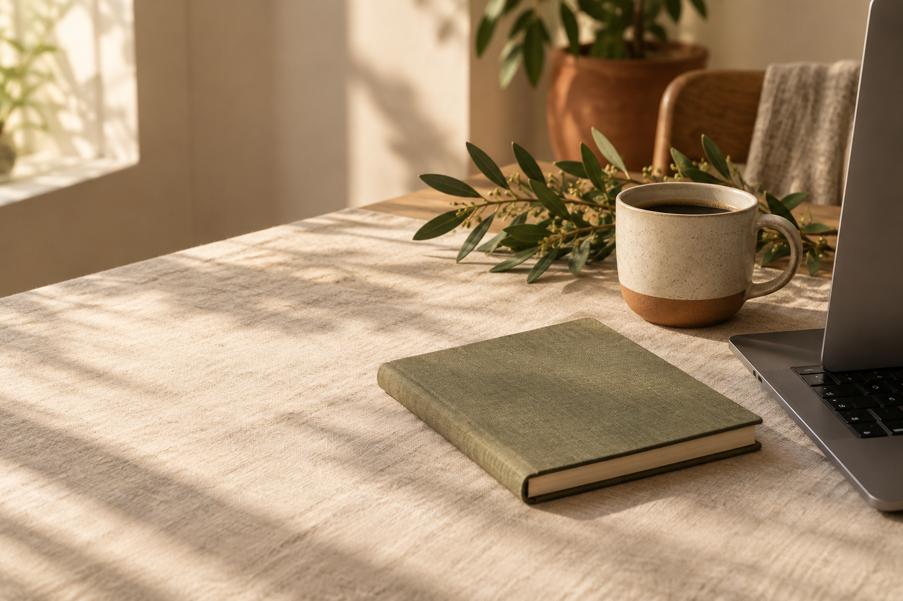
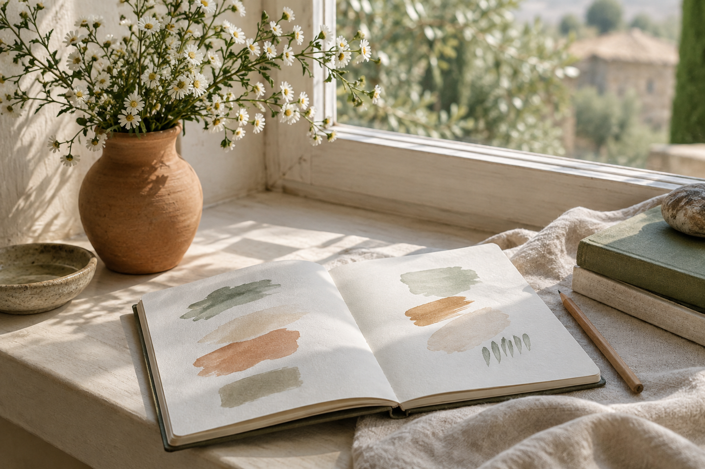
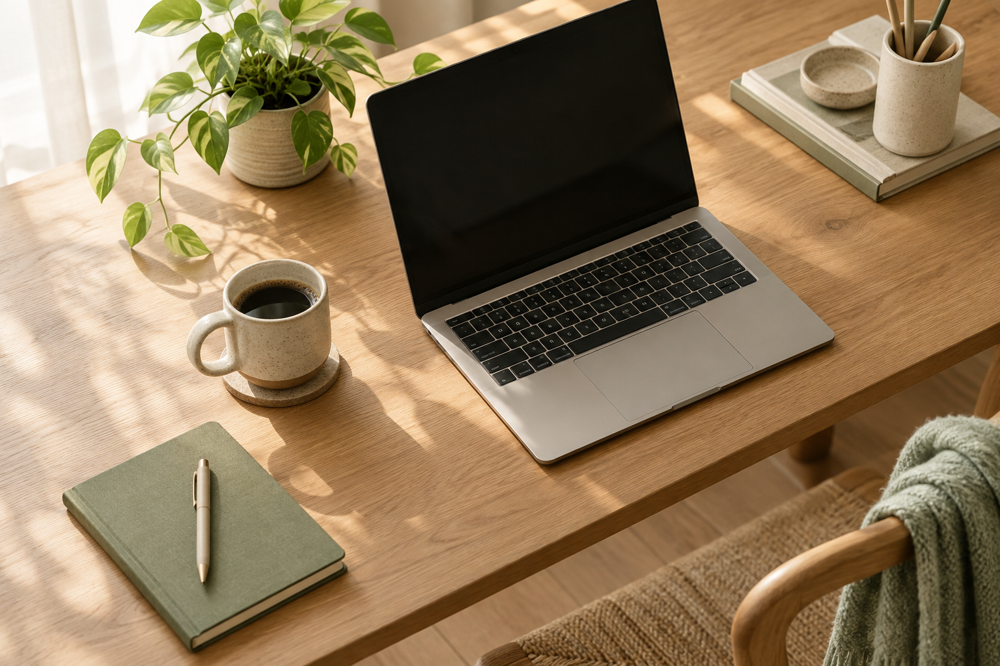
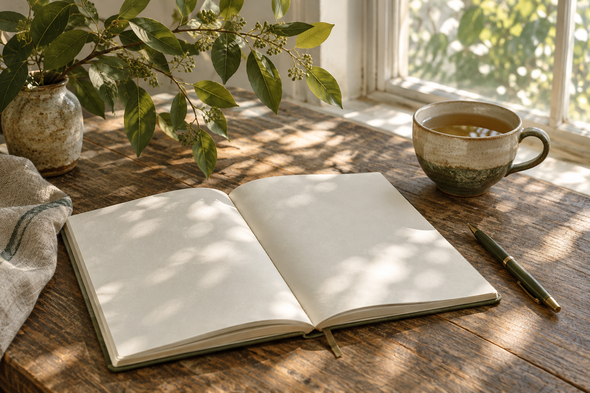

The beauty of starting small
A little progress each day can turn an unfamiliar idea into something you can build with confidence.
A collection of notes on learning, creativity and finding joy in the process.

A LITTLE INSPIRATION, EVERY DAY
A little progress each day can turn an unfamiliar idea into something you can build with confidence.
Thoughtful design starts with noticing the colours, shapes and details already around us.

Simple layouts, readable text and clear links help make a website easier for everyone to use.

Keep experimenting, ask questions and celebrate what you learn along the way.